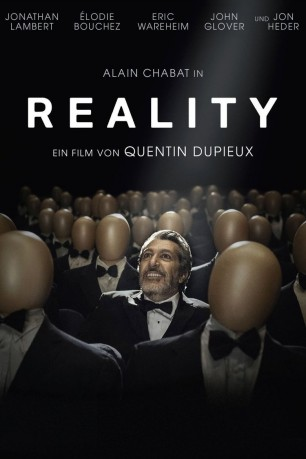
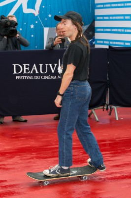

#7453 Reality
 
 IMDB-Wertung: 6.9 / 10
IMDB-Wertung: 6.9 / 10  Metascore: 0
Metascore: 0 
Der Kameramann und Filmemacher Jason Tantra (Alain Chabat) sucht bei einem Produzenten die finanzielle Unterstützung für seinen nächsten Film. Da es sich dabei um einen Horrorfilm handeln soll, stellt der betreffende Produzent ihm eine Bedingung: Er soll den besten Schmerzschrei für den Sound des Filmes einfangen, einen, der ihm einen Oscar einbringen könnte. Und das in achtundvierzig Stunden. Dennis (John Heder), der Moderator einer Koch-Show, leidet unter permanentem Juckreiz und geht der Ursache dafür auf den Grund. Währenddessen findet ein kleines Mädchen (Kyla Kenedy) ein Videoband mit dem Titel „Reality“ im Bauch eines Wildschweins, das ihr Großvater, ein Tierpräparator, ausweidet. Zunächst wirft sie es in den Papierkorb, doch dann fragt sie sich schließlich, ob sie es sich nicht doch ansehen soll...
Jahr: 2014
Dauer: 87 Minuten
FSK: 16
Land: Frankreich Studio: Alive Vertrieb und MarketingTonspuren: DTS - ,
Untertitel: Deutsch,
Auflösung: 1080p (1920x1040) Größe: 4003 MB
Genre: Komödie
Regisseur: Quentin Dupieux
Drehbuch: Quentin Dupieux
Soundtrack:
Darsteller:
 Alain Chabat als Jason Tantra
Alain Chabat als Jason Tantra-  Jonathan Lambert als Bob Marshall
- Élodie Bouchez als Alice Tantra
- Kyla Kenedy als Reality
 Jon Heder als Dennis
Jon Heder als Dennis- Eric Wareheim als Henri
 John Glover als Zog
John Glover als Zog Matt Battaglia als Mike
Matt Battaglia als Mike- Susan Diol als Gaby
- Erik Passoja als Billie
- Jonathan Spencer als Blue
 Bambadjan Bamba als Tony
Bambadjan Bamba als Tony- Michel Hazanavicius als Award Presenter
 Roxane Mesquida als Awards Hostess
Roxane Mesquida als Awards Hostess Brad Greenquist als Jacques
Brad Greenquist als Jacques Patrick Bristow als Klaus
Patrick Bristow als Klaus- Sandra Nelson als Isabella
- Axelle Cummings als The Receptionist
- Raevan Lee Hanan als Luci
- Jayce Dempsey als Skeleton
- August Bagg als Dog
- Elizabeth Bond als Mrs. Marc
- Carol Locatell als Lucienne
- Jayne Entwistle als Suzy
- Atticus Todd als Daniel
- Travis Guba als The Technician
- Judy Kain als Cashier
- Nate Riley als Movie Customer
- Jason Sims-Prewitt als Gym Athlete
- Jonathan Kowalsky als Gym Customer
- Michael J. Sielaff als Gym Guy
- Roy Abramsohn als Supervisor
- Stuart McLean als Spectator
- Dwayne Standridge als Spectator #2
- Mark Burnham als Frank
 Shannon Edwards als Waves Watcher
Shannon Edwards als Waves Watcher- Charley Koontz als Pedestrian
- Michael Lanahan als Spectator #5
- Jared Ward als Copper
- Gregory Schmauss als Card Player , uncredited
- Lola Delon als Zog's Assistant
- Brandon Gage als Serge
- Justin Share als Frankenstein
- Morgan Hesen als Bruno
- Elliot Goldwag als Old Man
- Kaela Crawford als Spectator
- Andrew Shea als Spectator
- Thomas Bangalter als Patient of Dr. Klaus
- Nick Charles als Zog's Camera Assistant
- Jarod Collins als 'B' Camera Operator
Datei: X:\2014(N-Z)\Reality (2014, FSK16, 1920x1040).mkv seit 10.11.2017
Festplatte: HD 2013(I-Z)-2014(A-Z)
 Es gibt insgesamt 163 Filme in der Gruppe '2014(N-Z)'
Es gibt insgesamt 163 Filme in der Gruppe '2014(N-Z)'